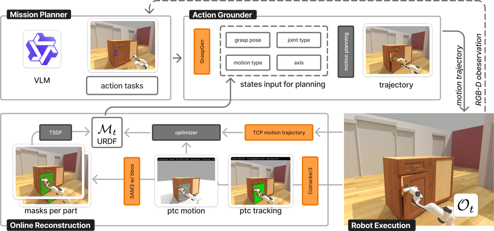
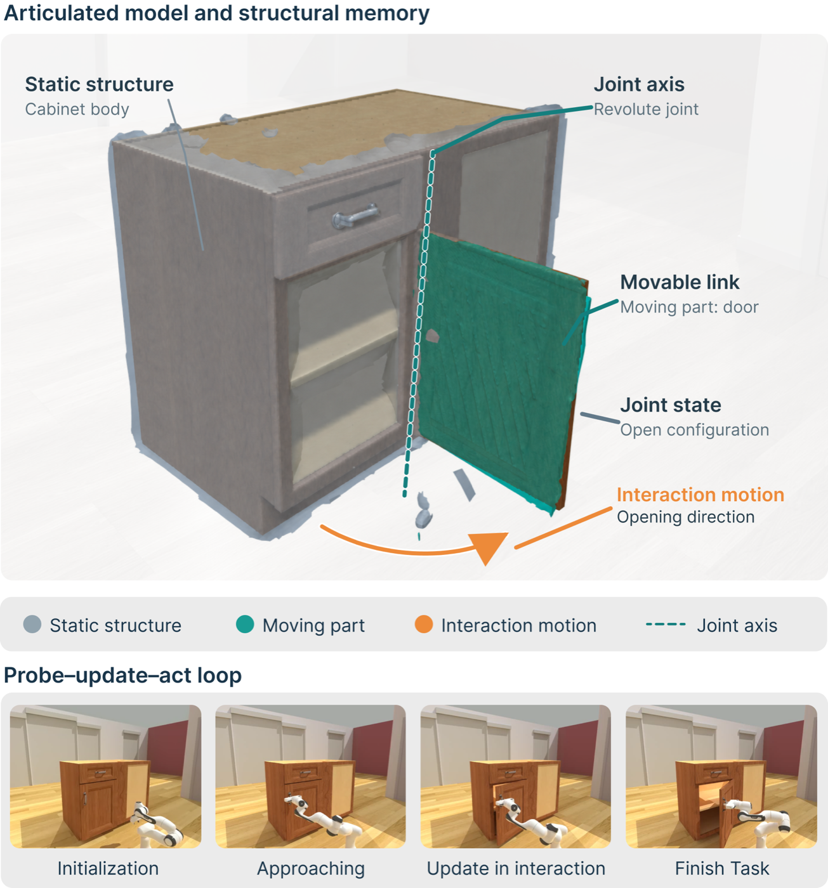

A robot can't tell how a cabinet opens just by looking. Act2See lets it find out by trying: a short pull reveals the joint, the robot writes what it learned into an explicit URDF, and a VLM planner reads that model to decide the next move — probe again, open the part, or move on. Each interaction refines the model, and the model shapes each interaction. On a real robot, it opened a drawer in 5/5 runs and a hinged door in 4/5.

The VLM mission planner uses the current observation and persistent memory to choose a target and decide whether to probe, execute, or skip. The action grounder turns that decision into a grasp (GraspGen) and a joint-constrained motion executed in bounded chunks. CoTracker3 point tracks are lifted to 3-D to estimate joint parameters, and SAM-based masks with pose-aligned TSDF fusion update part geometry. The resulting URDF, with task progress and interaction outcomes, informs the next decision.

Act2See turns robot interaction into an evolving articulated model. The robot probes an unknown object, updates an explicit URDF from the observed part motion, and uses the recovered joint structure to generate subsequent manipulation trajectories.
| METHOD | PRISMATIC AXIS (°) ↓ | PRISMATIC VALID (%) ↑ | REVOLUTE AXIS (°) ↓ | REVOLUTE POS. (cm) ↓ | REVOLUTE VALID (%) ↑ | RUNTIME (s) ↓ |
|---|---|---|---|---|---|---|
| ArticulateAnything | 9.00 | 76.9 | 0.00 | N/A | 100 | 181.62 |
| VideoArtGS (RGB) | 1.84 | 76.9 | – | – | 0 | 874.30 |
| Act2See | 2.60 | 100 | 8.69 | 6.70 | 100 | 4.23 |
System-level comparison in SAPIEN with a Franka Panda arm. Methods use different sensing inputs, so this is not an identical-input estimator ablation. Valid rate is the fraction of cases with the correct joint type and finite joint parameters.
| CONDITION | PRISMATIC COMPLETION (%) ↑ | PRISMATIC EXEC. ↓ | REVOLUTE COMPLETION (%) ↑ | REVOLUTE EXEC. ↓ |
|---|---|---|---|---|
| Without sequential planning | 81.8 | 1.00 | 0.0 | 1.00 |
| Without reconstruction | 72.7 | 3.73 | 45.5 | 4.45 |
| Full Act2See | 81.8 | 1.00 | 72.7 | 2.18 |
| Full Act2See + prior axis | 90.9 | 1.73 | 81.8 | 2.45 |
Reusing structure from the robot's own interaction matters most for hinged doors. The prior-axis condition starts from an axis estimated in a preceding Act2See interaction with the same part, not from simulator ground truth. Completion criteria and execution counting differ across conditions, so this is a system-level comparison.